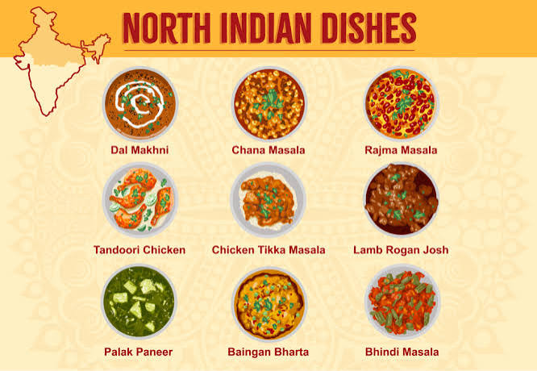

Indian cuisine is a style of cooking that has developed over many centuries in the Indian subcontinent. It is characterized by its use of spices, herbs, and a variety of cooking techniques.
Indian cuisine varies greatly by region, reflecting the diverse cultures and climates of the country. Some notable regional cuisines include:
For more information, visit the Wikipedia page on Indian Cuisine.
North Indian cuisine is known for its rich and creamy curries, tandoori dishes, and breads like naan and roti. Popular dishes include butter chicken, palak paneer, and dal makhani.
South Indian cuisine is famous for its rice-based dishes, dosas, idlis, and coconut-based curries. Popular dishes include sambhar, rasam, and various types of idli.
East Indian cuisine is known for its fish dishes, sweets like rasgulla, and mustard-based curries. Popular dishes include machher jhol, sandesh, and various types of pitha.
West Indian cuisine is known for its spicy curries, seafood dishes, and street foods like pav bhaji and vada pav. Popular dishes include vada pav, pani puri, and various types of kachori.

 s.jpg)
w.jpg)
e.jpg)